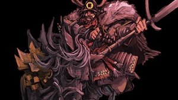
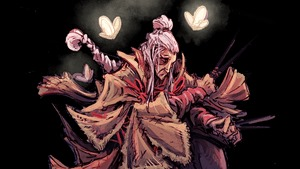
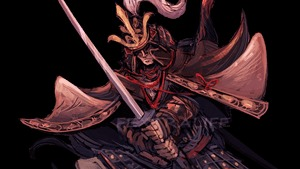
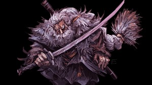
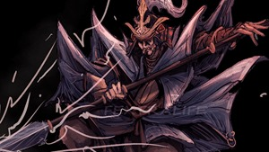

Chefes de Sekiro
Principais confrontos que definem a jornada do Lobo

Gyoubu Oniwa
Localização: Arredores de Ashina
Dificuldade:
Fácil
Recompensa: Memória: Gyoubu Oniwa

Lady Butterfly
Localização: Propriedade Hirata
Dificuldade:
Difícil
Recompensa: Memória: Lady Butterfly

Genichiro Ashina
Localização: Castelo de Ashina
Dificuldade:
Médio
Recompensa: Memória: Genichiro

Macaco Guardião
Localização: Vale Afundado
Dificuldade:
Difícil
Recompensa: Lágrima de Sangue

Grande Shinobi Owl
Localização: Castelo de Ashina
Dificuldade:
Muito Difícil
Recompensa: Memória: Grande Shinobi Owl

Isshin, o Santo da Espada
Localização: Campo de Batalha de Ashina
Dificuldade:
Lendário
Recompensa: Memória: Isshin, o Santo da Espada